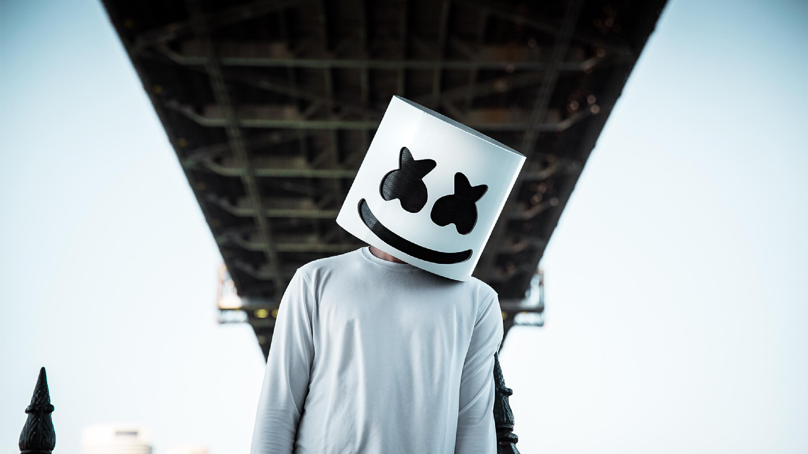

|  |
Marshmello es un DJ y productor de música electrónica de los géneros Future Bass,
Trap y Electro House. Comenzó a ganar notoriedad internacional gracias a sus remixes de canciones
de Jack Ü y Zedd entre otros. Su canción «Alone» alcanzó el Billboard Hot 100.
Ha colaborado junto a artistas como Ookay, Jauz, Slushii y Omar Linx.
Marshmello lleva una máscara en sus apariencias públicas. Su identidad es desconocida,
si bien frecuentemente se especula con que podría ser el DJ estadounidense Chris Comstock,
más conocido por su nombre artístico, Dotcom, cuyo estilo es similar al de Marshmello,
a lo que hay que sumar varias coincidencias, como que tienen el mismo agente y que supuestamente
comparten mismos tatuajes y día de cumpleaños. En una entrevista, Skrillex se refirió a Marshmello
como «Chris» cuando este le llamó en medio de la entrevista.